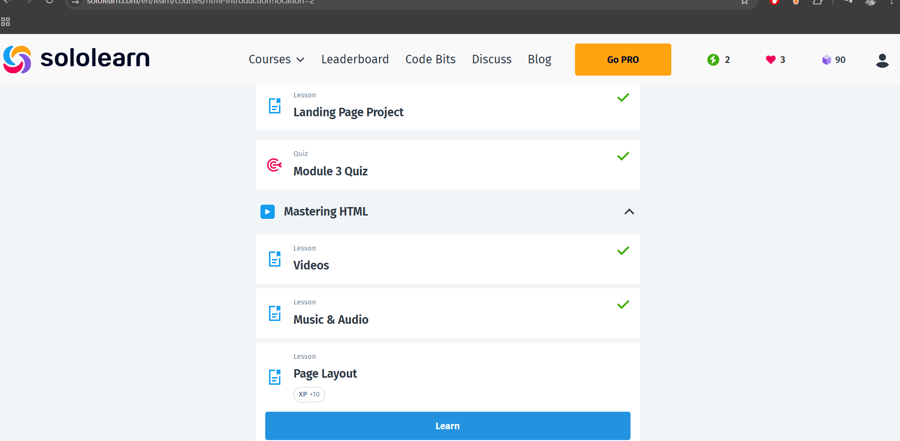

About Me
Hi! I'm Barbare, a young aspiring programmer from Tbilisi. I love learning HTML, CSS, and Python, and I dream of becoming a full-stack developer one day! I also love dancing,singing,learning new languages!
My Skills
- HTML
- CSS (learning...)
- Python
- JavaScript (learning...)